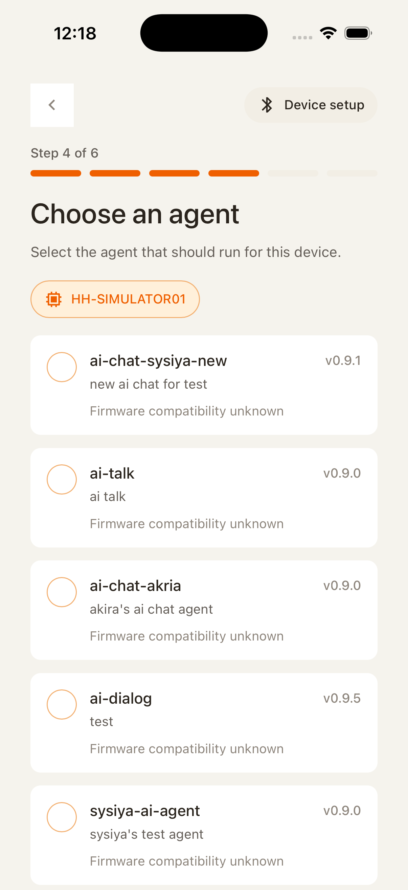
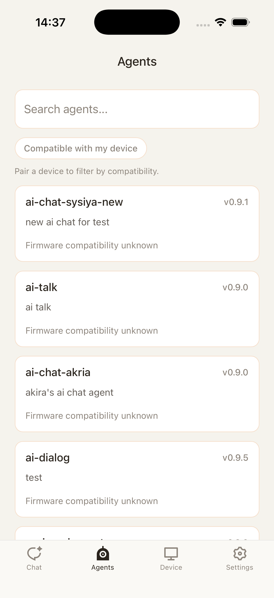
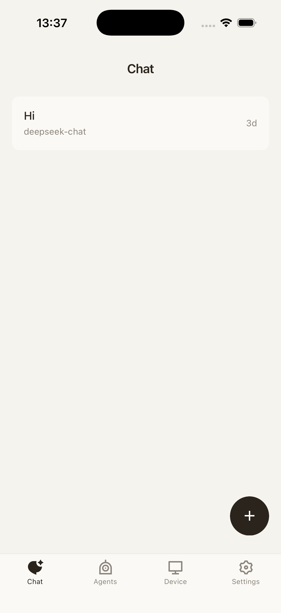
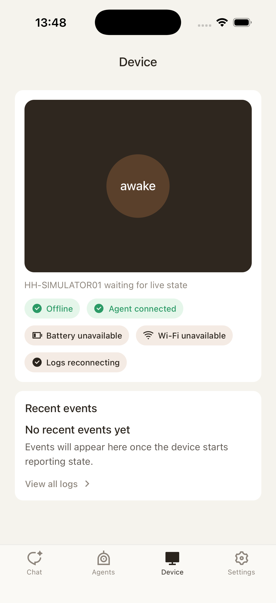

Why this lives here
This file is a mobile interaction contract. It lives next to the existing onboarding, chat, agents, and device screenshots in mobile-ui-contracts so implementation and acceptance work can reference one place.
This file is a mobile interaction contract. It lives next to the existing onboarding, chat, agents, and device screenshots in mobile-ui-contracts so implementation and acceptance work can reference one place.
Sprint folders are for weekly task rhythm. This artifact captures UI flows and state contracts that should remain useful across sprints.
Every send, switch, and uninstall state must derive from desired/reported binding, generation ack, and runtime readiness, not from install existence alone.
Onboarding keeps account sign-in so purchases, adoption, sync, and device ownership have an identity base.
Keep Bluetooth scanning, pairing-code confirmation, and local pairing so the app knows which device is active.
Onboarding can recommend an Agent, but it must allow skip and land in the paired + unbound main app.
If the user chooses an Agent, create the desired primary install and enter pending state.
Firmware fetches or receives the binding, applies it, and reports the matching generation.
Chat unlocks after verified binding; skipping Agent lands in unbound state with follow-up prompts.
Device remains manageable. Chat entry stays visible, but input is disabled and points users to Marketplace or Device binding.
Show progress, block duplicate sends and switches, and allow cancel or device-status inspection.
The current Agent becomes the primary Agents tab experience; chat input, voice, and history are enabled.
Do not silently enter Chat. Show the failure reason, retry, switch Agent, and Device diagnostics.
Chat becomes read-only or disables input, then refreshes binding to avoid sending to an old runtime.
The Device tab provides recovery entry points to recheck network, pairing, and desired binding.
Sign-in and Bluetooth pairing stay; Agent selection is optional and skippable.
Establish account identity, ownership, and sync.
Confirm a nearby device and complete local pairing.
First-pass interaction keeps sign-in and Bluetooth pairing; the Agent choice page can appear, but must not block the user.
Request Bluetooth permission and scan for Nora devices.
Nearby · not paired
Continue only when this matches the device screen.
Pairing creates device trust, not a current binding.
This screen only handles Bluetooth permission, scanning, pairing code, and pairing confirmation.
Choose an Agent to install and bind, or skip.
Adopted · recommended
Installed · not current
Continue as paired + unbound; bind later from Marketplace or Device.
This step can recommend or choose an Agent, but Skip must be a clear primary path.
Paired · no current agent
After skipping Agent choice, the device is still paired, but current primary-agent binding is empty.
Install an agent to unlock chat.
Adopted · ready to install
Buy to use
Installed · not current
Former Agents/People browse and purchase capabilities move to Marketplace. Account and preference entry points move to Me.
Adopted · compatible with Nora Dev Kit
Runtime will be created before binding.
desired primary install -> firmware ack -> chat enabled.
This button starts runtime creation, desired binding, and the wait for reported matching generation.
Bound to Nora Dev Kit A14 · gen 42
12 messages · device runtime
Last active yesterday
The former Chat tab becomes Agents, centered on the current bound Agent, sessions, and configuration.
Current · device runtime ready
Input is enabled only when device is paired, current binding is verified, and runtime is ready.
Waiting for device reported generation 43.
When switching model or current Agent, the disabled button and reason must remain visible in Chat.
Current runtime · 12 messages
Different agent · read only
Old Agent history can be read, but must not silently restore an old runtime for sending.
Paired · cloud manageable
gen 42
gen 42
Ready for current agent
The Device tab is the authoritative entry for desired/reported state, runtime, health, and recovery.
verified on device
Installed · compatible
Owned · install first
Prefer a replacement; empty binding disables Agents Chat.
Device Configure must clearly express replacement, null desired, and waiting for ack.
Device did not report the requested binding.
When firmware binding fails or becomes stale, users see a clear recovery path.
| State | Marketplace | Agents | Device | Me | Technical Gate |
|---|---|---|---|---|---|
| unbound | Recommend Install and use | Show empty state and disable Chat input | Show paired but no current agent | Account, notifications, and preferences remain available | No desired current install |
| pending | Buttons enter installing / switching | Chat pauses sending and shows waiting for device | Show desired/reported mismatch | Does not change pending, but account and settings remain available | desired generation != reported generation |
| bound | Agent is marked Current | Chat, voice, and history work normally | desired/reported/current are consistent | Show current account and app settings | reported generation ack + runtime ready |
| failed | Detail shows failure and retry | Do not send to failed runtime | Guide to logs, retry, and reprovision | Keep support, log export, and account entry | install/binding/runtime failed |
| stale | Allow browsing, but avoid marking current incorrectly | Read only or disabled input | Refresh binding projection | Suggest refresh or re-auth if needed | local projection older than device/cloud state |



